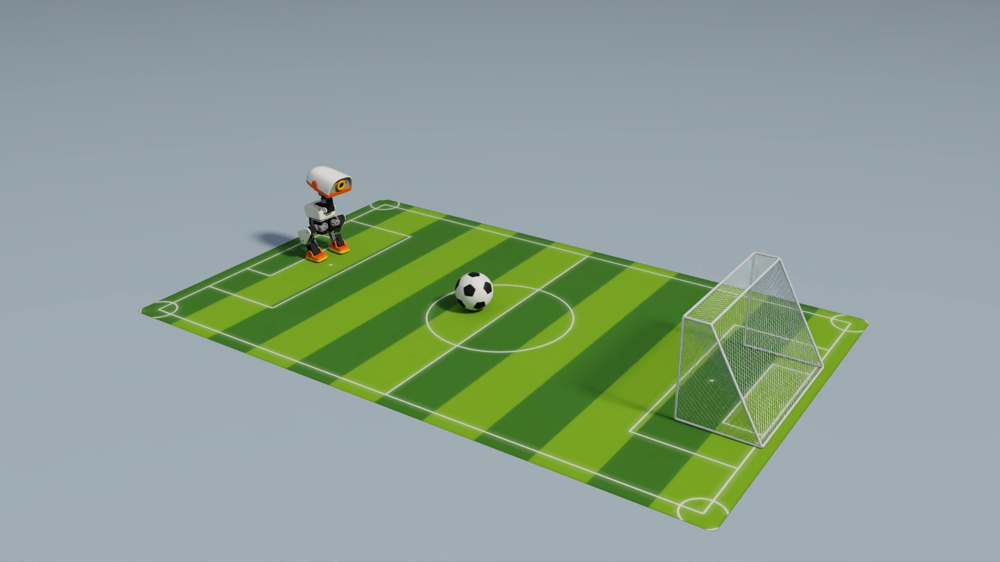
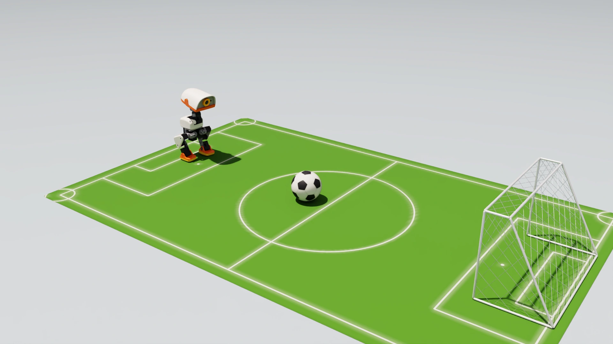
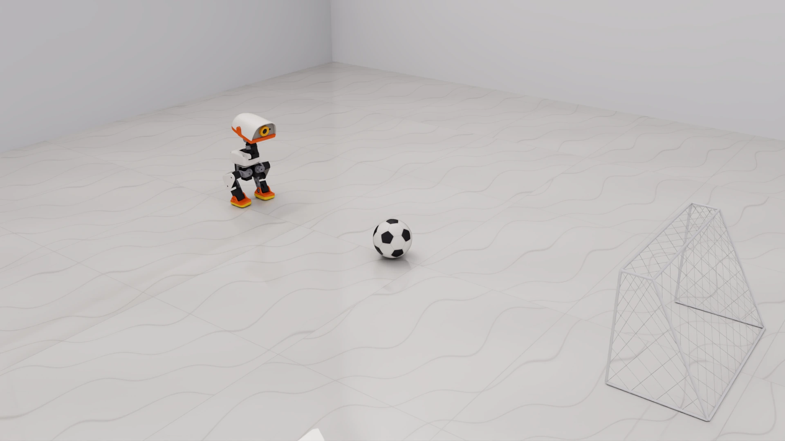
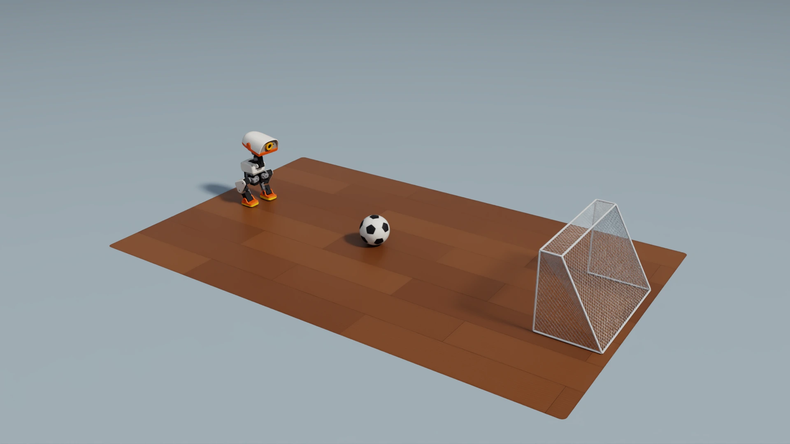
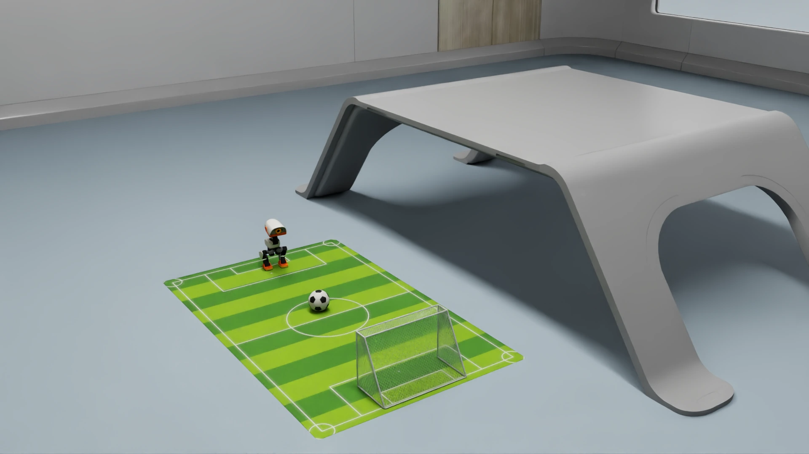

5.3 From the pitch to more environments#
After a task has been made reliable on the green pitch, how environment domain randomization and Cosmos 3 data augmentation can prepare a model for the different floors, lighting and layouts of real homes; which changes keep the original action labels and which require new simulation.
Make one scene reliable first#
The shots in this course (keyboard football in Section 2.1, the onboard policy in Part 4 and the GR00T walking shot in Section 5.2) all use the same green football pitch: the same field, goal, ball and lighting. That is deliberate. Only when a task is stable in one fixed scene are failures easy to explain; if the original scene cannot be completed reliably, adding ten rooms only makes problems harder to locate.
A real robot will not stay on a green pitch, though. Floors at home may be wooden boards, tiles or carpet; light differs between day and night; the background holds sofas, table legs and clutter. Once shooting is reliable on the fixed pitch, the next question is how to expand the environment step by step. This section covers ideas and principles only.
Why a real robot needs environment variation#
A model trained only on the green pitch may have learned cues we do not want it to rely on, such as “a white spot on a green background is the ball” or “the goal always appears within this brightness range”. In simulation those cues always hold, so the model has no reason not to use them; on a light wooden floor they vanish and the model may lose the ball.
There are other gaps between simulation and reality: real cameras have exposure changes, motion blur and noise; real lights cast shadows and reflections; real floors have friction that differs from the simulated setting. Together these are called the sim-to-real gap. Letting a model see sufficiently varied conditions during training is one of the main ways to narrow it.
Striped pitch


Plain pitch


Light stone floor


Wooden floor


Furnished room


The same Microduck in different visual and spatial conditions. Compare floor texture, reflections, shadows and furniture in the camera background. The furnished room uses the official Isaac Sim Simple Room asset. These static illustrations explain environmental variation; they are not shooting-validation results.
Environment domain randomization#
Sections 3.3 and 3.4 already used domain randomization to vary servo characteristics, friction and terrain: rather than matching one real environment exactly, selected conditions vary randomly within a range, ideally with the real environment inside it. GR00T, which reads images, also needs visual variation such as lighting, materials and backgrounds. Choose ranges for the intended setting and evaluate unseen combinations and boundary conditions.
Category |
Conditions that can vary |
Effect on the shooting task |
|---|---|---|
Appearance |
Floor material and pattern, walls and background, unrelated furniture and clutter |
Changes the image; the actions need not change |
Lighting |
Brightness, color temperature, light direction, shadows |
Changes the image; the actions need not change |
Camera |
Exposure, small mounting-angle offsets, noise |
Changes the image; larger mounting changes also alter the visible geometry |
Starts |
Robot and ball positions, headings and distances |
Changes both the image and the required actions |
Physics |
Floor friction, ball mass and bounce, joint characteristics |
Changes the motion outcome; the original actions may no longer work |
A useful rule of thumb: think about what you expect to change in the real scene, and randomize that. Too narrow a range misses real conditions; too wide a range gives the model too much to learn and can make it conservative everywhere.
Randomization must also keep the task itself unchanged. The goal size, the ball size, the robot’s body and the criterion “a goal counts as success” should not drift along with the appearance. Changing appearance is meant to teach the model to ignore irrelevant variation, not to turn the task into a different one.
Randomize starts first, then expand rooms#
Start variation usually comes first: on the same green pitch, change the robot and ball positions and test whether the model completes the task from unseen combinations; then widen the range of headings and distances; only then introduce indoor backgrounds, lighting and floor appearance.
When starts or physics change, the robot needs different actions, so the physics simulation must be rerun and the teacher must provide new actions under the new conditions; the action labels of the original trajectory no longer apply. Only pure appearance changes (same positions, same motion, just a different-looking image) can possibly keep the original action labels.
“Can’t see” or “can’t do”?#
After moving to new environments, failures have different causes and need different help:
Observed failure |
Likely help |
What to verify next |
|---|---|---|
Loses the ball under new lighting |
Visual data coverage and appearance randomization |
Whether finding the ball and full shots both recover under lighting not seen in training |
Sees the ball but drifts off to one side |
Corrective demonstrations for drifted states |
Whether corrective data covers the drifted states the model actually reaches |
Unsteady or falls after kicking on a new floor |
Physics randomization and adaptation of the low-level skills |
Whether measured friction and contact fall within the simulated range |
Furniture blocks the original path |
Layout variation and an executable detour skill |
Whether an executable route exists in the new layout and the shot still succeeds after detouring |
Appearance randomization changes “what it looks like”; physics randomization changes “how it actually moves”. Design and verify them separately.
Another option: GR00T outputs the 14 servo actions directly#
In the previous section, we designed GR00T to output 8D high-level requests, and the skill execution layer turns them into targets for the 14 servos (Section 5.2). One could also remove that middle layer and let GR00T output joint targets directly:
Swipe horizontally to see the full diagram
1Observation and instruction
The input types remain camera images, the task instruction and body state; the state encoding and action labels must be redesigned for the 14-joint interface.
2GR00T
The model predicts the actions for a short stretch of time ahead.
3Joint target sequence
Every step gives the 14 servo target angles directly, without the walking policy.
4Joint controller
The servos still need position control, and targets still need clamping and rate limits; when inference times out or the output is abnormal, the robot should enter a controlled stop.
The potential benefit is flexibility: movements are no longer limited by the low-level skills, and one model might learn a wider range of tasks. The price is much stricter requirements:
Data: many more and more varied demonstrations, including recovery after losing balance, because no low-level policy keeps the robot balanced any more.
Latency and balance: action chunks can run step by step, but the model still needs timely corrections from fresh observations. Continuous execution, expired actions and recovery from imbalance must be handled; remote inference also adds network delay.
Cosmos 3: add visual variation to the same actions#
Changing materials and lights in simulation needs assets for every condition and a fresh render. A complementary route is to change the appearance of existing video directly with a generative model.
NVIDIA Cosmos is a platform of world foundation models for physical AI. Cosmos 3 brings scene understanding (reasoning), video generation (world generation) and action generation into one model family. For this task, a use worth studying is video transfer: starting from an existing simulated demonstration video, structural conditions such as edges, depth or segmentation constrain where objects are and what shape they have, while a text prompt changes the lighting, floor or room appearance to produce new candidate videos.
Swipe horizontally to see the full diagram
1Reliable source trajectory
The source data first needs correct actions and timing. Behavior the original demonstration never taught cannot be added by changing its appearance.
2Cosmos 3 transfer
Structural conditions help keep the layout while the prompt changes lighting or room appearance. Generated results are only candidates; even with constraints, some frames can be wrong.
3Check data consistency
Check the size and position of the ball and goal, the robot’s shape, the moment of contact and consistency across frames. If the ball is generated on the other side of the foot, the original action label no longer holds and the clip should be discarded.
4Train and compare
Compare against a model trained without generated data, with the same demonstrations and training budget; keep new rooms or new combinations for testing to judge whether the augmentation helps.
When augmenting data with generated video, several constraints must hold:
Geometry must be preserved. The relative positions of the ball, goal, camera view and robot must not change. An action label means “what to do given this geometry”; if the geometry changes, the label is invalid.
The meaning of the action labels must be preserved. Generation changes only the images; the state and the 8-D requests are reused unchanged. That is valid only when the appearance change does not affect what should be done.
It must be consistent over time. The walking-shot GR00T reads four history images spanning about 5.8 seconds at once. If earlier and later frames of the same clip are generated as different rooms or lighting, the model sees a scene that could never happen.
Physics does not happen again. A generated video changes only the picture; how the ball rolls and how the feet touch the floor are not recomputed. Swapping the carpet for a more slippery floor may break the original gait and kick timing; changes involving friction, mass or contact must be collected again in physics simulation.
So the role Cosmos 3 suits is a supplement of appearance diversity: letting the model see more lighting and room appearances while geometry, actions and physics stay the same. It cannot replace new action demonstrations, nor prove that the actions can be executed in a new environment; reliability still has to be tested in closed-loop simulation and then on the real robot.
Check your understanding
If a video of the same actions is given ten different backgrounds, is that ten times as much action experience?
Show explanation
No. It broadens the visual conditions, but the coverage of actions and states stays the same. Learning to recover from drift, take another route or adapt to a new floor needs corresponding new trajectories or corrective data.
Check your understanding
Why can the original action labels be kept after a lighting change, but not after switching to a more slippery floor?
Show explanation
Lighting changes only the images; the motion of the ball and robot is unchanged, so the original actions remain correct. A slippery floor changes the gait and contact, so the original actions may not be executable; the physics simulation must be rerun and new actions recorded.